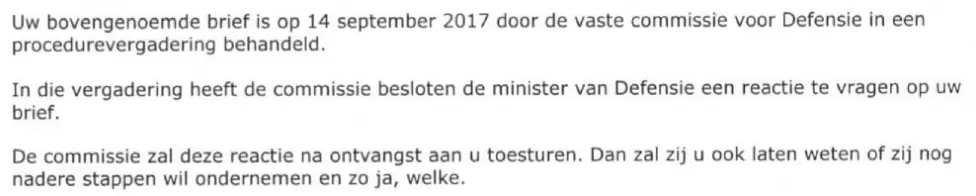

Prueba · Carta
Comisión Permanente de Defensa a Giltay, 18 de septiembre de 2017
El pasaje
«Su carta arriba mencionada fue examinada el 14 de septiembre de 2017 por la Comisión Permanente de Defensa en una reunión de procedimiento. En esa reunión, la comisión decidió pedir a la ministra de Defensa una respuesta a su carta. La comisión le enviará esta respuesta una vez recibida. Entonces le comunicará también si la comisión desea emprender nuevas gestiones y, en caso afirmativo, cuáles». Página 1, el texto de la carta, justo debajo del saludo. Traducido del neerlandés; el texto original figura a continuación.
Texto original
“Uw bovengenoemde brief is op 14 september 2017 door de vaste commissie voor Defensie in een procedurevergadering behandeld. In die vergadering heeft de commissie besloten de minister van Defensie een reactie te vragen op uw brief. De commissie zal deze reactie na ontvangst aan u toesturen. Dan zal zij u ook laten weten of zij nog nadere stappen wil ondernemen en zo ja, welke.” Las líneas de la imagen escaneada se han unido aquí y los tres párrafos se han puesto uno a continuación de otro.

Por qué importa este documento
El 1 de junio de 2017, Giltay pidió aclaraciones a la Cámara de Representantes (Tweede Kamer) sobre el caso del encubrimiento en torno a Srebrenica. La Comisión Permanente de Defensa examinó su carta el 14 de septiembre de 2017 en una reunión de procedimiento. Decidió por unanimidad pedir una respuesta a la ministra de Defensa. En esta carta se comprometió con Giltay a enviarle esa respuesta. El ministro interino de Defensa, Klaas Dijkhoff, respondió a la Cámara el 13 de octubre de 2017. El 9 de noviembre de 2017, la comisión envió esa respuesta a Giltay y la archivó sin más trámite. La carta del ministro a la Cámara trata del rollo de película y de la afirmación de que Defensa habría intentado «psiquiatrizar» a Giltay. Pero el MID (servicio de inteligencia militar) y Casema, la empresa de cable, no aparecen en ella. Nunca ha llegado una respuesta sobre el fondo del caso de los servicios de inteligencia.
Procedencia
- Documento
- Carta, una página, en papel con membrete de la Cámara de Representantes
- Remitente
- Comisión Permanente de Defensa, Cámara de Representantes de los Estados Generales, La Haya
- Destinatario
- E. Giltay
- Fecha
- 18 de septiembre de 2017
- Referencia
- 2017Z09359/2017D25719
- Unanimidad
- La decisión se adoptó sin ningún voto en contra. Varios periodistas asistieron a la reunión, entre ellos Marco Bakker y la reportera Esther Monsma de Hart van Nederland, cuyo operador de cámara grabó la reunión. El libro (edición inglesa) describe la decisión como unánime, www.
dedoofpotgeneraal. nl/ book.pdf#page= 196 - Asunto
- «Verzoek om opheldering over Srebrenica-doofpotaffaire» (solicitud de aclaraciones sobre el caso del encubrimiento en torno a Srebrenica)
- Referencias
- En respuesta a una carta de E. Giltay del 1 de junio de 2017, examinada el 14 de septiembre de 2017 en la reunión de procedimiento de la comisión
- Firmado
- T.N.J. de Lange, secretario de la Comisión Permanente de Defensa
- Continuación
- Carta del 9 de noviembre de 2017 del secretario en nombre de la comisión, referencia 2017Z14365/2017D31469, con una copia de la respuesta del ministro y la decisión de archivarla sin más trámite
- Idioma
- Neerlandés
- Conservado por
- Edwin Giltay, el destinatario
- Véase también
- Carta del ministro de Defensa, Dijkhoff, a la presidenta de la Cámara, Arib, 13 de octubre de 2017
Citado en:
- el ensayo «La prohibición cayó, el libro quedó en pie» en los capítulos (2) «El Gobierno se contradice» y (11) «Poner fin al silencio sobre Srebrenica» y en la diapositiva «Cámara de Representantes · 2017» de la presentación «La historia en el mapa»
- la biografía del autor.
Documento: https://
Modificado por última vez el 13 de septiembre de 2026, consultado el 27 de noviembre de 2026.

Esta página es una ficha de prueba del libro El general del encubrimiento de Edwin Giltay y del sitio web que lo acompaña.